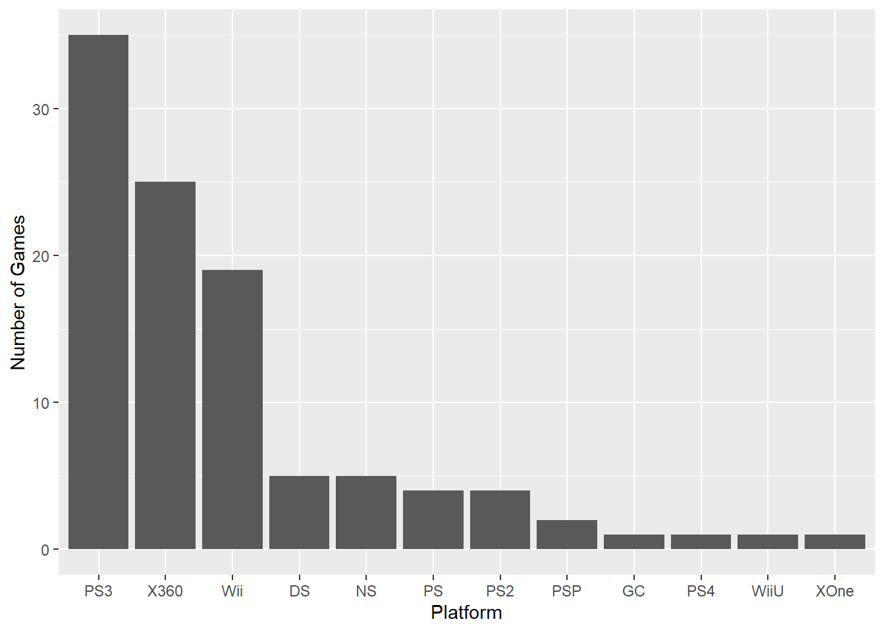
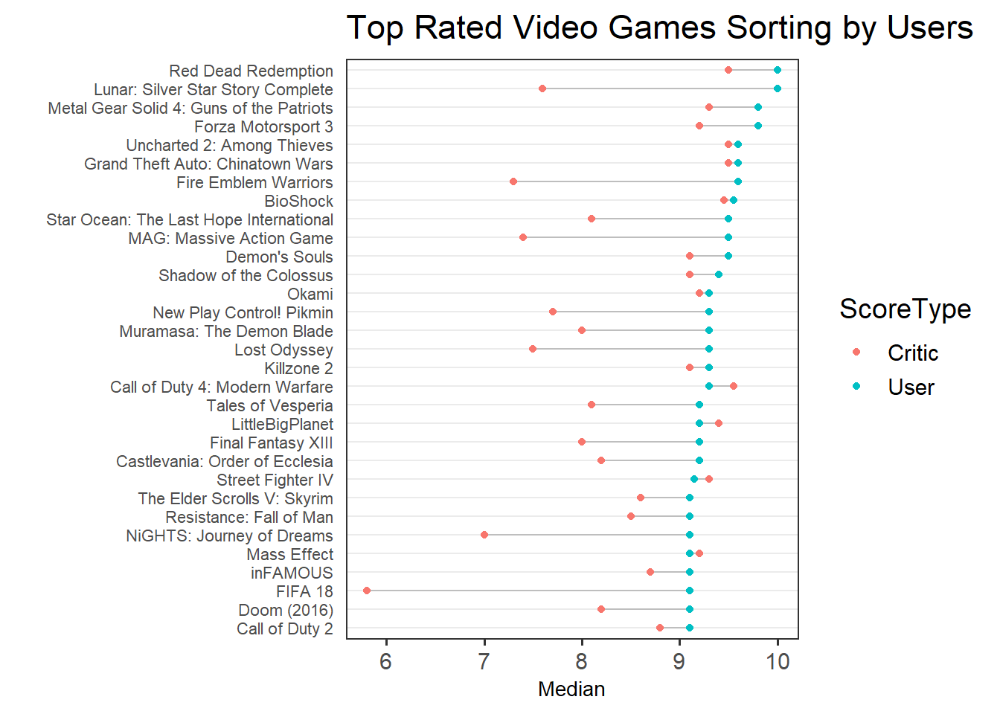

Chapter 5 Results
5.1 Comparing the Competitiveness of Publishers & Platforms
Here is a brief introduction on Platform information. 
We can see that PS3 and X360 have published most games and earned most sales among all platforms throughout years. Although Wii had some games, its sales amount is not comparable to that of PS3 and X360. Other platforms had less than 10 games and usually had less than 12.5 million sales. Then just by observing these two plots, we see that PS3 and X360 have almost dominated the video game market. However, did PS3 and X360 perform the best for every year? As we are interested in finding out the trend of platforms over time, we take the variable Year into our consideration.
For the graph below, we only picked several platforms which we consider them to be significant (either have fair number of games or decent amount of sales) and classified all other platforms to the “Other” category so that we can be focused on influential platforms over the years.
As the bar plot displays, we can see that it is not the case that PS3 and X360 dominate the market for the entire period. Before 2000, the video games market was pretty small. Most games at that time were on platforms that we do not even know about today. In 2001, playing on PS2 was a popular trend. Then, PS3 and X360 boomed from 2005 to 2010. These two platforms took up most market in that period and almost all of their sales were from 2005 to 2010. Later although they did publish more games, but since significant amount of sales data is missing/unavailable, we have no way to tell their performance after 2010. Except from missing values problem, Xone had a boom in 2014. Starting from 2015, NS and PS4 as the new generation of platforms have taken up the market and it is possible that they could replace PS3 and X360 in the future.
Now let us take a look at publishers are in our dataset.
Sony Computer Enterntainment has published most games over the years. Other competitive publishers include Capcom, Ubisoft, Konami, and Activision.
Sony Computer Entertainment, Activision, Rockstar Games, Capcom, Ubisoft/Konami are the 5 publishers with most sales amount. Although Rockstar Games has the 3rd most selling amount, it has published less games than other competitive publishers. Thus, we decide not to include it in the top publishers list.
5.2 Top 5 Video Games & Genres
Graph above shows the total gobal sales for every game. The top five popular games across the world are:
1.Call of Duty 4: Modern Warfare
2.Call of Duty: Modern Warfare 2
3.Grand Theft Auto IV
4.Assassin’s Creed
5.Grand Theft Auto V
All of their global sales are over 7.5 millions.
The graph displays the sales for different genres. The colors represent different regions. From the stacked bar chart, we can find out that Action is most popular genre whereas Action-Adventure is the least popular. The top five genres are: Action, Shooter, Role-plying, platform,and Adventure.In addition, we can see that Action and Shooter captures the majority game market. Next, we will look closer to the regional sales by genre.
Obviously, North America players contributes most to the game market. The trend of popularity of genres in Europe, North America, and other regions are same as the global trend. Japan is slightly different.
5.3 Users’ and Critics’ Preference
Critics generally influence the public opinion trends of games, and can promote game sales (or hit game sales) to a certain extent. Therefore, game companies that want to achieve a certain breakthrough in sales can first target on the preferences of these media and professional players.
We have extremely limited data available for critics’ and users’ ratings on same video games as shown in the bar graph. Based on the data we have, it can be seen from the box plot that whether it is from general players or critics, the difference in the ratings of racing games is the smallest and the overall score is high. Reviewers all dislike Action-Adventure genre, which has low socre. Besides, it seems like general users and critics have a large discrepancy when rating Sports games. While users give Sports video game with score above 9, critics are overall not optimistic about sports games, which has the lowest score (below 6) among all genres of video games.
For general players, we see there is a large gap in adventure and role-playing genre, and for critics, socres range a lot in Fighting genre.
After plotting out the histogram of 95 critic scores and 95 user scores (using median), the distrubution of both critic and users’ scores are left skewed. We can notice general users give scores more loosely on same selected vedio games compared to critics. The user group generally give high score in a sense that all games have score above 6 and most of them have scores between 8 to 9. Comparatively, critic are more strict on evaluating; a few video games have score less than 6, and a large number of scores range from 6 to 9.
Let’s further look at the score difference for individual game. And we would now expect a large score difference in Sports genre. We have picked top-30 rated video games for analysis.

The top-5 rated video games for users are:
- Red Dead Redemption, Lunar: Silver Star Story Complete
- Metal Gear Solid 4: Guns of the Patriots, Forza Motorsport 3
- Uncharted 2: Among Thieves, Grand Theft Auto: Chinatown Wars, Fire Emblem Warriors
- BioShock
- Star OceanL The Last Hope International, MAG: Massive Action Game, Demon’s Souls
We have top 5 rated video games for critics and they are:
- Call of Duty 4: Modern Warfare
- Uncharted 2: Among Thieves, Red Dead Redemption, Grand Theft Auto: Chinatown Wars
- BioShock
- LittleBig Planet
- Street Fighter IV, Metal Gear Solid 4L Guns of the Patriots
In general, users are more generous in giving scores for video games as we mentioned before. All of 30 selected games have scores above 9 from the perspective of users, whereas for critics, scores ranges from below 6 to 9.
It is noteworthy that there is a large socre difference in video game FIFA18, in which users give scores above 9 whereas critics rate below 6. This observation is consistent with the huge difference in ratings in sports games. One possible reason could be users who give high scores are fans from FIFA or football. Similar scenario can be seen depending on the interests of users. To be more specific, users tend to review games they want to play and play games that they think they will enjoy. So some scores tend to be a bit high, often hovering between 7 and 9 and rarely dropping to a 6 or below. On the other hand, critics will measure various aspects when evaluating a video game: story plot, gameplay design, background music, game operation, etc. Due to the limitation of our dataset, we were not able to analyze the factor affecting scores. If we could gather more information about rating criteria, a more solid conclusion could be draw from analysis.